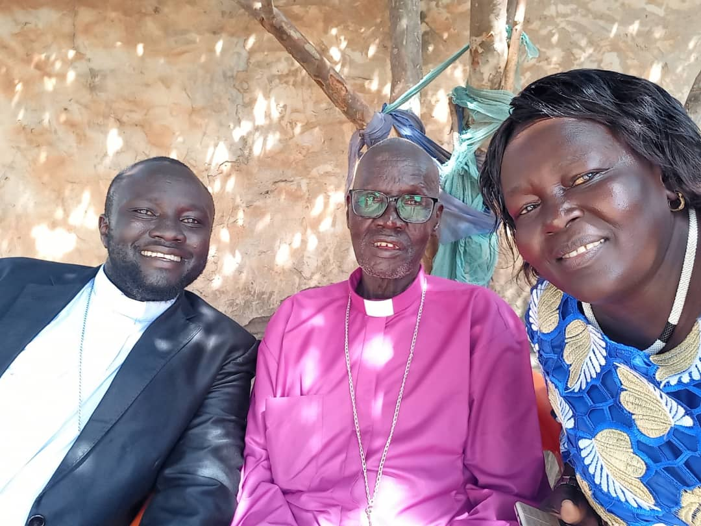

About Akot Diocese
Church History
The Episcopal Church of South Sudan – Akot Diocese was established in 1985 as part of the global Anglican communion. Rooted in faith and resilience, the diocese has grown from a handful of congregations to a vast network serving communities across Lakes State and beyond. Through civil wars and hardships, the church remained a beacon of peace and development.
In 1992, the diocese expanded to include 10 archdeaconries, and by 2005, it had established over 50 schools and 3 health centers. Today, the diocese continues to serve over 200,000 faithful members across the region.
Previous Bishops

Rt. Rev. Isaac Dhieu Ater (2008–2024)
Founding bishop who established the diocese structure, built the first cathedral, and initiated educational programs across the region.
He also strengthened diocesan infrastructure, expanded healthcare services, and promoted peace-building initiatives during challenging times.
Current Bishop

Rt. Rev. Matthew Mading Malok Madul
Enthroned in 2024
Bishop Mading Malok holds masters in Theology from Nairobi University. He is focused on youth empowerment, theological education, reconciliation, and community development. Under his leadership, the diocese has launched 15 new parishes and established a theological training center.
Archdeaconries
The diocese comprises 10 archdeaconries, each led by an Archdeacon. Under them are deaneries and parishes. View full structure →
Diocesan Leadership
Chancellor
Hon. Mary Aluel
Legal AdvisorMother's Union President
Mrs. Sarah Deng
Laity Representative
Mr. Peter Malual
Youth Coordinator
Rev. James Akol